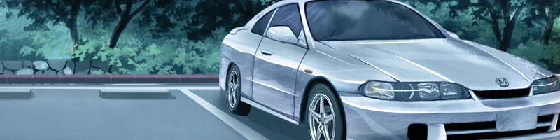
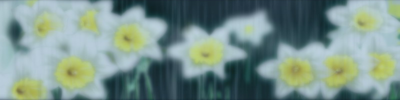

2005年1月16日 7F几天过后，天气越发寒冷了。 学生们正在忙于准备即将来临的考试， 而我们却一如既往地看着乏味的电视。 「真无聊啊···」 「···是啊」 偶尔也会这样下意识地交谈几句。 两个人都在毫无作为地消磨着时间。 「对了···说起来你是哪一天？」 「···是今天」 「是吗，原来是今天啊···」 今天是指她曾经提到过的暂时出院的事。 「或许，我们不会再见面了」 「嗯？ 啊，是啊···」 即使她能够再次回到7楼， 恐怕最多也只有1次机会了。 而到了那时，我也一定会往返于这里和家中吧。 这样一来，很难想象我们会再有见面的机会了。 「你决定好了吗？」 「是指选择在哪一边死吗？」 「嗯」 「不，还没决定呢」 「是吗···」 她有些悲伤地低声说道。 恐怕只有经历过两次暂时出院的人，才能够理解她的心情吧。 我对此依然无法有任何现实感， 医生也从没有向我提起过有关第1次暂时出院的事。 我忽然想到··· 她又是否已经决定好了自己的归宿呢··· 「濑津美，行李已经收拾好了哦」 一位阿姨走了进来。 大概她就是濑津美的母亲吧。 她也对我轻轻地点了点头以示问候。 「我们走吧，准备好了吗？」 「··嗯」 「那么，我们就告辞了」 她的母亲再次向我点头表示告辞， 转过身去准备离开这里。 但是，当她向女儿伸出手时··· 「······」 ···她却依然纹丝不动。 尽管母亲拉住了她的手， 但她却完全没有从折叠椅上站起来的意思。 「怎么了，濑津美？」 「我有些···难受···」 「啊？是哪里难受？ 是胸口？还是腹部？」 「胸口···」 「坚、坚持一下，我这就叫医生来」 母亲带着慌张的脚步声， 向护士值班室跑去。 在这里， 只剩下我，和坐在折叠椅上的她···两个人。 我完全不了解她的病情。 我所知道，只是她的名字叫濑津美，血型是O。 这些都是记载在白色手环上的内容。 但是，我们都是7楼的居民。 并且，她的病情至少要比我更严重。 「还是躺下等着医生过来吧。」 说着，我指了指放在房间一角的长椅。 「来吧，我扶着你」 「······」 「不必了···已经没事了」 说完，她自己站了起来。 「喂，你别···」 别硬撑啊。 还没等我说出口， 她就已经走出了休闲室。 夜晚。熄灯时间过后。 我又像往常一样，看倦了漫画书，却又迟迟无法入睡， 于是就在大楼里闲逛着。 不知不觉间， 我走进了没有灯光，一片漆黑的休闲室。 在那里，我找到了她。 「唷，又到这里来了吗···」 「···嗯」 「怎么了？ 身体又不舒服了吗？」 「不是」 她凝视着窗外，简短地回答道。 最终，她的暂时出院被取消了。 这样一来，不知何时才会迎来下一次机会。 恐怕不是延迟几天就可以了结的事，而是要几周时间吧。 「莫非···」 「今天早上···你是在装病吗？」 「········」 不过，说是装病也有些奇怪。 我们早就不是健康的人了。 「就是说···你不想回家吗？」 「···我不明白你在说什么」 「你不是已经没有几次机会了吗···」 「········」 面对我的疑问，她什么也没有回答。 过去，她曾经问过我很多次， 会选择在哪一边迎接死亡。 对于她的这个疑问，我至今还未得出答案。 而她则说过，既不愿选择在家里，也不愿选择在7楼。 「你果然···」 「是没有什么可以去的地方了啊···」 「···就算是这样···和你又有什么关系呢？」 「不，我只是随便问问而已···」 休闲室中一片漆黑。 她依然没有转头看我一眼。 而是静静地注视着窗外。 虽然时间只是刚过11点， 但在医院的区域里，几乎所有的灯光都已经熄灭。 「日常」世界与「异常」世界的边界。 我们已经没有在7楼和家之外进行选择的权利。 她正站在7楼漆黑的窗边，注视着外边的世界。 「日常」的世界。 高楼和民宅中依然亮着无数的灯光。 大路上，匆匆赶路的行人向着自家的灯火前行。 尽管自身还没有什么切实感触··· 而且我是第七层的病人，不是一般的病人。 已经无法再回到对面的那个世界中去了······我的时间静止了··· 在这个只看得到自己的世界里··· 我送走了不知多少个季节···多少次下着梅雨的苍白天空··· 最初，我从窗口眺望着那些赶往学校的孩子， 以及快步赶路的行人们。 当我看倦了窗外景色时，总会打开电视机。 没有其他事情可做，也没有其他事情能做。 即使窗外飘着雪花，电视屏幕中也依然会是艳阳高照。 在眼前展开的， 是一个没有寒冷，没有炎热，没有痛苦的梦幻世界。 ···在空想中寻求着安乐··· 只有庞大的知识积累在头脑中··· 它们罗列在一起，构筑起了毫无意义的价值观··· 不知不觉中，电视中的影像失去了现实感。 之后是书本中的内容，游戏中的情节，乃至于家族中的亲人··· 最终，面对自身， 我也只能用旁人的眼光去审视，无法再体会到现实感了。 因此，来到7楼时，我并没有吃惊。 只要闭上双眼，身边的世界随时都可以消失。 所以我不在乎，也不想让自己去在乎。 很快，我即将迎来第2次出院。 下次回到这里的时候，或许我将无法再下床行走了。 尽管心中很清楚， 但我依然痛恨自己的无奈。 ···连归宿之地都无法选择的自己，是如此的滑稽 。
冰冻住时间，冰冻住内心，在心口留下巨大的伤痕··· 但即使如此···我依然痛感到自己这22年的人生是如此可悲···
2005年1月19日 7F几天过后 乌云从天空中消失， 取而代之的是一片湛蓝的冬日天空。 父亲出乎意料地前来探望了我。 他始终摆着一副悲伤的表情。 不过，他还谈到了我的保险之类的事情。 唯独谈到这个话题的时候，悲伤会从他的脸上一扫而去。 「我有些事情要去和医生谈一下···」 说完，父亲起身离开了。 似乎是走向了以前去过的那间昏暗的客厅。 病房里只剩下我一个人。 因为无事可做， 我将手伸向了父亲买来的杂志。 在杂志旁边， 还堆积着一些探病用的水果和饮料。 在水果篮的旁边。 在我讨厌的哈密瓜前面··· 摆放在那里的···是一把车钥匙。 「···············」 闪着银光的钥匙。 父亲引以为豪的爱车，是一辆进行过内部装修的酷派。 我曾经试着向父亲借用过它，但被毫无商量地拒绝了。 现在，它的钥匙就摆在我的面前。 而胸前睡衣的口袋里，则躺着那张崭新的驾照。 尽管早已失去了作用，但我依然时刻将它带在身边··· 「日常」世界的凭证。 我默不作声地拿起了钥匙。 没有经过任何考虑。 自己也不明白为什么会这样做。 只是在不知不觉中这样做了。 就好像是在经历着电视中的情节一般。 之后，我收拾了今后几天的药物。 将它们装进塑料袋··· 然后，走出了病房。 ···悄悄地从护士值班室前溜过··· 快步走向电梯的方向。 右手提着塑料袋，左手握着车钥匙。 胸前的口袋中，装着那本已失去作用的驾照。 休闲室。 在电视前， 我找到了她的身影。 她依然坐在折叠椅上， 无聊地望着电视画面。 「我说···这节目有意思吗？」 「如你所见···」 「不，无聊至极···」 与往日一样的交谈。 与往日一样，似乎望着远方的虚无目光。 「那么···我们就一起走吧？」 「诶···？」 我拿出车钥匙说道。 「我也···不喜欢家」 「···············」 「我同样···也不喜欢7楼···」 「那么···我们就一起走吧？」 「···嗯」 说着，她从折叠椅上站起身来。 扬起的长发掠过我的鼻尖。 就这样， 她也将几天的药物装进塑料袋后··· 我们一起离开了7楼。 我关掉了无聊的电视。 主持人那爽朗的傻笑声就此沉默了。 我们穿着睡衣走进电梯。 从最高层来到1楼。 到达1楼后，我们没有走向住院部和急诊室的入口， 而是故意穿过门诊部大门，走向了停车场。 刚来到屋外，冰冷的枯叶便拍打在我的脸上。 在这种没有障碍物的停车场，寒风越发猛烈。 我们俩小心注意着周围的目光， 在宽广的停车场中穿行。 就这样··· 片刻后，我们终于找到了父亲的车。  银色的酷派。 这是父亲进行过内部装修的爱车。 我立刻拿出钥匙打开了车门。 「来，快坐进去吧」 「嗯，明白了···」 我在驾驶席上坐了下来。 她坐在了助手席上。 因为身材矮小，坐下后甚至难以看清前方的景色 。 接着，我将手中的钥匙插入了点火器。 转动，然后轻轻地踩下了油门。 一切都是在驾校中学过的步骤。 很快，车内响起了低沉的引擎声。 接下来，只要拉开手刹，松开离合器就可以了。 ···现在，我们能够到任何地方去。 「那么，我们上路吧···」 「···嗯」 她轻轻地点了点头。 我将挡位换到了二挡。 之后，静静地发动了车子。 因为不太熟悉这台车子的离合器， 车体咣咣当当地摇晃着，但还是向前驶了出去。 「···晃得很厉害哪」 「哦，因为是头一次开这辆车嘛···」 「顺便一提，这是我取得驾照后头一次开车」 「是吗···」 很快，我们来到了停车场的出口。 对面是一条宽敞的马路。 我开车穿过了一处没有交通信号灯的十字路口。 从后边传来了其他车辆的喇叭声。 大概是因为我们突然冲入了道路，他们对此表示不满吧。 因为不熟悉离合器的感觉，每变换一次挡位， 奔跑中的银色酷派都会带着响声晃动几次。 或许这也给后边那辆车的车主火上浇油了吧。 喇叭声一直持续了很久。 但我并不把它放在心上。 因为对我来说，那声音并没能带来多少真实感。 「我说···」 「···什么？」 「···你害怕吗？」 「·······」 「···你，希望我害怕吗？」 「不···我不是这个意思···」 午前，万里无云。 透过挡风玻璃，我凝视着一月的霜空。 不知为何，我从那片湛蓝中感到了一丝忧伤。 我们并没有明确的目的地。 那一天，车身在寒空下跟随着离合器不断颤抖。 那一天···，我们身穿睡衣，驱车向国道驶去。 那一天，一切都融入了冬日的气息中···2005年1月19日 茨城 水户街道当天边的太阳化作橙色的时候。 我们依然在驱车奔驰着。 只是毫无目的地奔驰着。 当周围的景色变得陌生的时候··· 「···我把车停一下」 「···嗯」 车终于停了下来。 这里是一条郊外的道路。 过往的车辆和行人都很少，显得非常冷清。 我将车停在这不知名的路边， 之后开始清点车内的物品。 ···希望能找到些派得上用场的东西··· 当初是毫无准备就逃了出来。 但显然，我们马上就会遇到许许多多的麻烦。 我一边思索， 一边翻检着面前的杂物柜。 真的是什么也没有啊··· 里边只有几百日元的硬币。 此外还有几本漫画书，和一部一次性相机。 尽管我们并没有什么明确的目的地， 但车内配备的导航系统似乎也早就坏了。 说起来，我现在手里只有8000日元左右。 这是我离开病房前匆忙塞进口袋里的全部财产。 即使加上眼前的这些零钱， 最多也只有9000日元左右。 当然了， 我从一开始就没期待过车里会有什么东西。 ···但是，只靠手头的这些钱，我们很快就会遇上难题了。 至少，住旅馆什么的就不用想了。 我想，她身上也根本不会有什么钱吧··· 「···怎么了？」 「哦，没什么···」 ···不去想它了。 一切都是预料之中的事。 这原本就不是什么经过精心筹划后才实行的计划。 比起这些琐碎问题来， 我现在更想前进，而不想停留在原地。 在黄昏的天空下， 银色的酷派再次开动了。 「对了，你肚子不饿吗？」 我一边驾驶，一边向她问道。 现在想来，我们从早上开始还什么也没吃过。 「找家便利店去买点什么吧？」 「···不去」 「喂，别那么挑剔啊。 再说，那至少也比7楼的饭食强得多吧」 「········」 但她什么也没有回答。 只是默不作声地低着头， 看着自己那身粉红色的睡衣。 「啊，我都给忘了···」 说着，我也看了看自己的衣服。 的确，如果穿着睡衣的话， 无论去哪里都会引人注目的。 尽管现在是在车内， 但还是先尽快想办法解决一下服装的问题为妙。 想到这里， 我扭转方向盘离开干道，驾车向街区驶去。 行驶了一段时间后， 我们来到了一处不知名的街道。 附近一定是有列车站吧。 周围过往的行人也比较多。 「这附近应该会有吧···」 我一边向街道两旁巡视，一边驱车缓慢地前行着。 「啊···找到了···」 很快，我找到了一间自助式洗衣房。 它位于一间小型公寓的1层， 看上去显得十分破旧。 ···这里或许正适合下手。 我将车停靠在距离入口稍远的位置。 「你留在这里稍等一下···」 「···？」 我不顾她那满脸的不解， 径直走向了自助洗衣房。 踏进自动门， 我立刻闻到了一股强烈的洗衣粉的气味。 这家洗衣房不光外观破旧， 设置于其中的洗衣机和烘干机也十分老旧。 店内空无一人。 其中1台烘干机正在运作着。 我立刻走进那台机器， 确认了一下计时器。 看来运转时间被设定成了30分钟。 而且，现在仅仅过去了5分钟。 ···衣物的主人一定是去外边消磨时间了吧。 想到这里， 我再次张望了一下门口。 确认附近没有人影后， 我将手伸向烘干机··· 一下子拉开了舱盖。 因为舱盖被拉开， 烘干机停止了工作。 我不顾逼人的潮气与热气， 将半湿的衣物从里边拽了出来。 之后，将它们抱在怀里， 仔细张望了一圈后跑出了洗衣房。 「啊······」 看到我怀中的衣物， 她惊讶地叫出了声来。 但我不去管她，将衣物扔到了后座上。 「好，我们走吧···」 「········」 我单手握住方向盘， 看了看刚刚弄到手的衣物。 粗略看去，多半都是一些花哨的牛仔服和汗衫， 尺寸也相当大。 虽然还是湿的， 但凭借车内空调的热气，很快就会被烘干了吧。 「待会选一些喜欢的换上吧···」 「·····」 她并没有回答我。 只是看了看身后那堆衣物。 「这也是没办法的事嘛···」 「···我知道」 我本来也不愿去做这种事的。 不过， 尽管手头的钱并没有什么明确的使用目的··· 但只靠这个金额的话， 也很难买到什么衣物。 当月亮探出头来的时候··· 我将车停靠在了一座公园的旁边。 它正好位于住宅区之中， 多半是一所儿童公园吧。 于是，我开始挑选起刚才偷来的衣物。 在车内空调的作用下，它们已经干透了。 「果然全都是些男装啊···」 正如刚才看到的第一印象， 全都是一些花哨的汗衫和牛仔服。 大概主人也是像我这个年纪的人吧。 服装的尺寸也与我很相近。 之后，我随便挑出一件运动衫和一条牛仔裤， 坐在驾驶席上换了起来。 「你也快挑一件换上吧」 「·······」 「全都太大了···」 「那你难道打算一直穿着睡衣吗？」 「········」 「明白了···」 她极不情愿地回答后， 随便拿起了一条牛仔裤和一件上衣，打开了车门。 「喂，你到哪里去啊？」 「···换衣服去」 说完， 她转身向公园一角的洗手间走去。 她很快就回来了。 手中拿着刚才穿过的粉红色睡衣， 换上了一条牛仔裤和一件白色运动衫。 「嗯，既然能穿上就好」 「······」 她没有回答。正如我所料， 服装的尺寸对她来说有些太大了。 因为牛仔裤过长，她将裤腿向上卷起了几层。 运动衫的袖子也同样被卷了起来。 「···还不如穿睡衣比较好」 「别这么说嘛， 还是这身衣服比较暖和哦」 「·········」 听到我的话后，她显得似乎有些不满。 「怎么，你想穿那种比较可爱的衣服吗？」 「不···」 她的回答与平时一样。 尽管对宽大的运动衫表示不满， 但这表情很快就从她的脸上消失不见了。 不知何时下起了雨来。 雨水无休无止地， 从一月的寒冷天空中落下。 挡风玻璃上附着上了无数的雨滴。 当那些雨滴汇聚成突破了表面张力的水珠时， 便会像溪流般集聚起来流下。 在流动中， 它们又会卷走位于下游的雨滴，使水流的声势更加威猛。 我坐在车内，凝视着雨水的流淌不息。 这里是一座位于山中的停车场。 我们从便利店买来了食物， 准备在这里过夜。 我们的晚饭是每人两个饭团，500mL的运动饮料， 以及半个马铃薯。 「很久没吃过这样的东西了哪···」 「···嗯」 她握着饭团低声回答道。 在一般人看来，这实在算不上什么好东西。 但与7楼的饭食相比，这已经算得上是美味佳肴了。 当我们同时将手伸向马铃薯的时候， 她的手忽然停住了。 「···怎么了？」 「没什么···」 在她视线的前方， 被烟雨笼罩的挡风玻璃对面··· 望着路边几朵白色的野花。 伫立在雨中的白色花朵。  尽管不知道那是别人种植的还是野生的， 但我曾经见过这种花。 「记得这种花是叫narcissu吧？」 「narcissu···也就是水仙」 「啊，原来就是水仙啊···」 尽管我对园艺并不熟悉， 但水仙的名字我还是有所耳闻的。 并且，我想起尽管她平时总是默不作声， 但在谈论这个话题的时候却曾经回应过我。 于是，我试着将话题继续下去。 「那么，这里的···也与电视里那种不同吗？」 「···嗯，严格说起来不是同一种」 「是吗？」 「不···在哪里都有可能找到的」 「那么在哪里才能找到啊？」 「······」 我对于这个话题并没有太深的兴趣。 只是随口问了一句。 但是，她却低头思索了一下··· 之后缓慢地开口说道。 「···西边······」 「···西边？」 「淡路岛···是以它闻名的···」 「喂，你以为淡路岛···」 ···你以为淡路岛在哪里啊？ 我驾车的经验还不多。 所以头脑中只是有大致的地理概念。 但是，淡路岛距离这里恐怕至少也有700km以上的路程， 即使是利用高速公路，也很难想象需要花费多少时间。 ···再说，靠我们手里这点钱，根本就不够交过路费的。 而且，即使是在普通公路上行驶， 油费也是难以保障。 「我说，你别异想天开了··· 那种地方怎么可能去得了啊？」 「······」 「···谁说我想去那里了？」 「诶···？」 「我只是在回答你的问题而已···」 说完， 她再次将目光停在了玻璃对面那雪白的花朵上。 冰冷的雨水使车窗内部凝起了一层白色露水。 但她依然透过雾气凝视着对面 ···我没什么兴趣到那个地方去。 但是，我同样也没有其他任何想去的地方···
第二章 银色的酷派